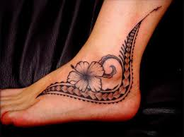
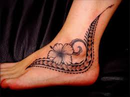

Le salon de Tattoo Derick peut vous proposer de nombreux motifs dans des styles différents.
Vous pouvez également venir avec votre motif personnel.
Vous pourrez recevoir des conseils avisés pour l'emplacement et le choix de votre tatouage.
Vous pouvez aussi "retoucher" ou recouvrir vos anciens Tattoo. Enfin, en ce qui concerne les tatouages polynésiens, chaque motif a sa propre signification. C'est la raison pour laquelle je ne fait que des créations en tenant compte de votre personalité et de votre vécu.


 
